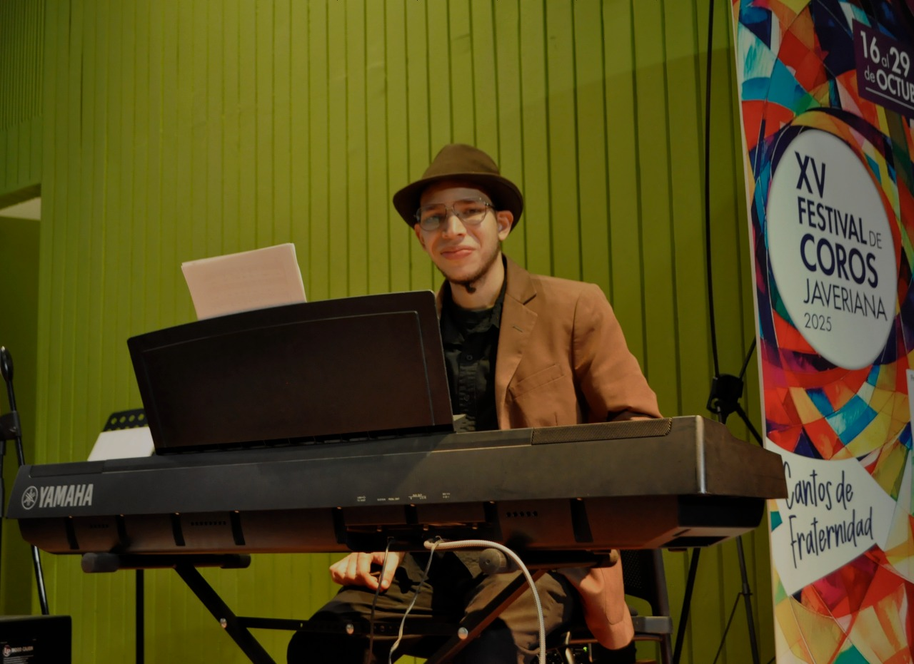
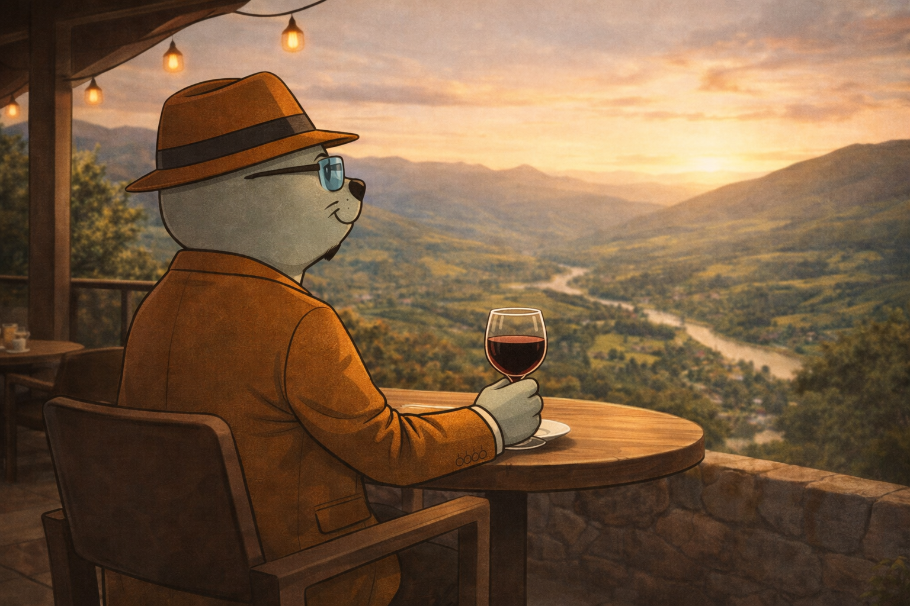
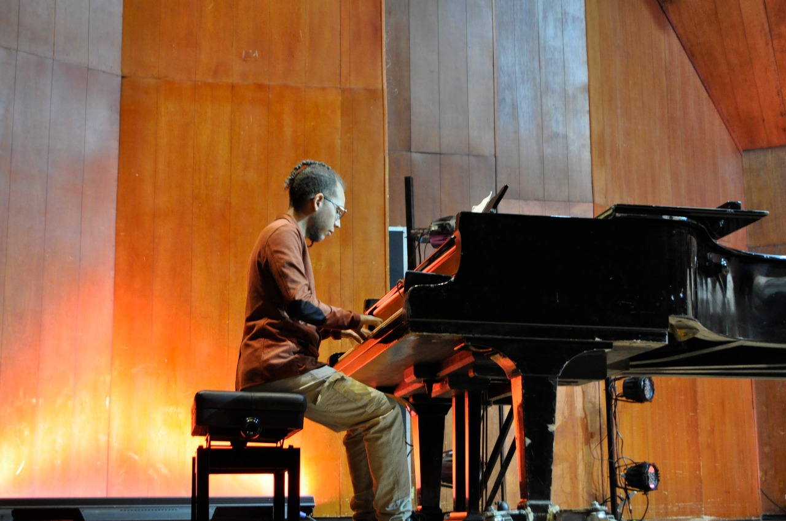
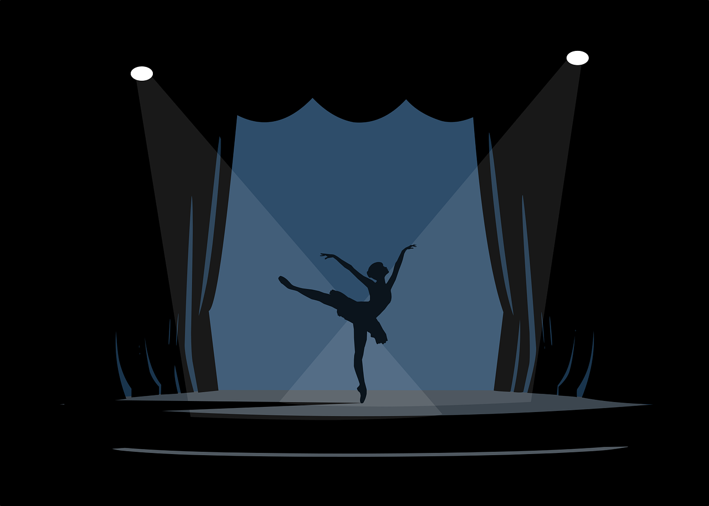
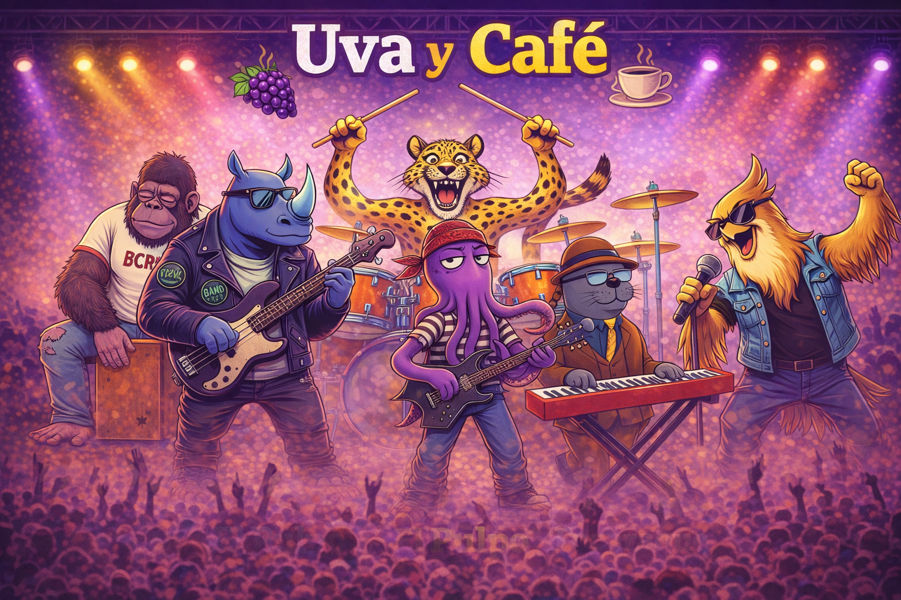

Dorach Records es un laboratorio creativo donde la composición,
la producción musical y el desarrollo artístico se encuentran
para transformar ideas musicales en proyectos sonoros con identidad propia.
Desarrollo completo de proyectos musicales
desde la idea hasta la producción final.
Creación de música original para artistas
y proyectos audiovisuales.
Desarrollo conceptual y estético
para proyectos musicales.

Dorach Records es un laboratorio creativo dedicado al desarrollo
de proyectos musicales que integran composición, interpretación
y producción.
Fundado por el compositor
Fabian Araque
,
este espacio reúne distintas formas de creación musical contemporánea.
Dentro de este universo creativo surge
Focaraque
,
un personaje musical animado que explora la relación entre música
y narrativa audiovisual.

Personaje musical animado.

Compositor.

Pianista clásico.

Agrupación musical.